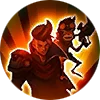
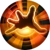
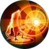

Battle Side-by-side BUFF
Dexter launches an extra attack each time Claude's Basic Attack lands, dealing 20 (+35% Total Physical Attack) Physical Damage to the same target. Dexter's Basic Attack can also trigger Claude's attack effects.| Physical Basic Attack | Deal Physical DMG to enemies. It can trigger ATK Effect and Physical Lifesteal. | | ATK Effect | Both Physical and Magic Basic ATK trigger ATK Effects. For example. the Devour Effect of Demon Hunter Sword, the Weakness Finder effect of Marksman Emblem, etc. |
|
Passive

Art of Thievery
Claude attacks enemies in a fan-shaped area ahead, dealing 160–285 (+40% Total Physical Attack) Physical Damage and reducing their Movement Speed by 20% and Attack Speed by 10%.
For each target hit, Claude gains 3% extra Movement and Attack Speed (doubled if the target is an enemy hero, up to 5 stacks) for 6 seconds.| Physical Skill | Deal Physical DMG to enemies. It doesn't trigger Physical/Magic Lifesteal but triggers Spell Vamp. | | Movement Speed | Movement Speed on the battlefield. Usually Calculated and Actual Movement Speed is equal. But when Movement Speed is below 230 or over 420 both Slowdown and Speedup Effect will decay.
Calculated Movement Speed = Basic Movement Speed × (100% + All Speedup Effect% - All Slowdown Effect%). | | ATK Speed | It determines the attacking times (capped at 3 times) per second.
Total current ATK Speed = Basic ATK Speed + Extra ATK Speed × ATK Speed Coefficient. |
|
Skill 1

Battle Mirror Image
Claude leaves a mirror image of Dexter at a designated location. Dexter’s mirror image automatically attacks enemies. Lasts 5.5 seconds. Claude can activate this skill again to switch places with the mirror image.
Dexter's Basic Attack deals 20 (+35% Total Physical Attack) Physical Damage and can trigger Claude's attack effects.| Blink | Penetrable movement. |
|
Skill 2
Blazing Duet
Claude and Dexter rapidly fire at the enemies nearby over 3 seconds, dealing 100–130 (+10% Total Physical Attack) Physical Damage to up to two targets each time they shoot. This skill benefits from Claude's Basic Attack effects and grants him a shield that can absorb 20 (+3% Total Physical Attack) damage.
The rate of fire increases with bonus Attack Speed.
Minions take 300% damage.| Physical Basic Attack | Deal Physical DMG to enemies. It can trigger ATK Effect and Physical Lifesteal. | | ATK Effect | Both Physical and Magic Basic ATK trigger ATK Effects. For example. the Devour Effect of Demon Hunter Sword, the Weakness Finder effect of Marksman Emblem, etc. | | Shield | Special HP is preferentially deducted when taking damage. The shield with shorter duration or lower points is usually preferentially deducted when multiple shields are stacked. |
|
Skill 3


{kind=link}